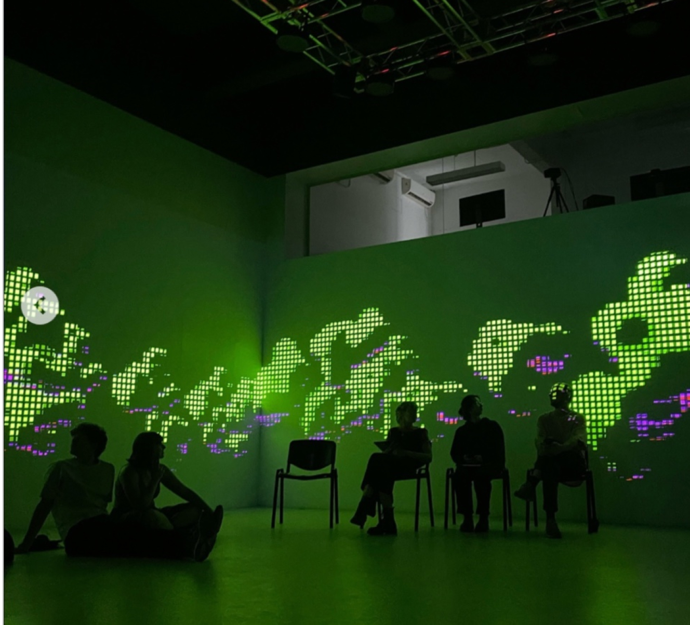

BRIEF
Conceptualization and development of an immersive experience projected across a four-wall space, integrating sound and lighting design.
Concept — Biological Entity
The experience follows the life cycle of a biological entity: birth, growth, reproduction, death, decay, and regeneration. The sequence plays on a continuous loop, reinforcing the idea of a system in constant renewal. The experience explores pixel-based systems that behave like small automata and, when clustered together, give rise to organic structures. This creates a tension between the mechanical and the biological. Could nature itself also be operating on autopilot?
